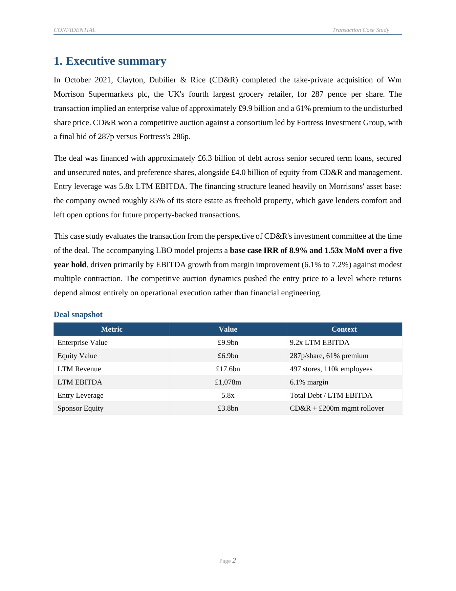
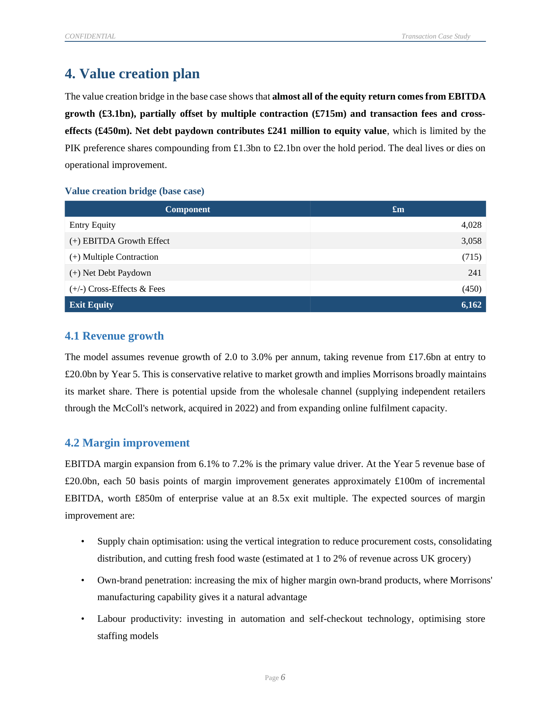

Overview
In October 2021 Clayton, Dubilier & Rice took Morrisons private at 287p a share. I rebuilt the deal as a private equity firm would have modelled it at the time, then wrote it up as a transaction case study. The aim was to understand not just what return the deal produces, but where that return actually comes from, and whether the assumptions behind it hold up.


Key model outputs
The deal enters at 9.2x EV/EBITDA and 5.8x leverage, and delivers a base-case 8.9% IRR and 1.53x money multiple over a five-year hold, deleveraging to 4.2x by exit. The returns are sensitive to the exit multiple:
- Downside (7.5x exit): 3.2% IRR, 1.17x MoM.
- Base (8.5x exit): 8.9% IRR, 1.53x MoM.
- Upside (9.0x exit): 11.3% IRR, 1.71x MoM.
The value creation bridge is the part I care most about. It separates how much of the equity return comes from EBITDA growth, how much from paying down debt, and how much from any change in the exit multiple, so the story behind the IRR is explicit rather than buried.
How the model is built
Seven tabs, 422 formulas, nothing hardcoded downstream of the assumptions:
- Assumptions: deal overview, entry valuation, last-twelve-months financials, operating and exit assumptions.
- Sources and uses: the financing structure with its leverage metrics.
- Operating model: five-year revenue, an EBITDA margin ramp from 6.1% to 7.2%, EBIT, tax and unlevered free cash flow.
- Debt schedule: four tranches (term loan B, secured notes, unsecured notes, PIK preferred), mandatory amortisation, a 50% cash sweep, and credit metrics (ICR, FCCR, DSCR).
- Returns: downside, base and upside scenarios, money multiple, IRR, and the reconciling value creation bridge.
- Sensitivity: two-way tables for IRR and money multiple.
- Summary: a one-page dashboard.
The transaction note
The written case study reads the deal the way an investment committee paper would. It opens with an executive summary and the investment thesis (vertical integration, the freehold property portfolio, the margin recovery opportunity, and comparable transactions), sets the industry context, lays out the value creation plan with a supporting bridge, and works through the key risks to profitability and the exit multiple. It closes on a three-scenario returns summary and a recommendation.
Tools and sources
Built in Excel with Python (openpyxl) and Node for the written note. Sources are the Morrisons FY2021 annual report, CD&R's August 2021 transaction announcement, Takeover Panel and CMA filings, and Bloomberg and Reuters deal coverage.
Download the files
- LBO model (.xlsx), seven tabs, fully formula-driven.
- Transaction note (PDF) and Word.
- Critical review (PDF), an eight-page self-assessment of the work.
Personal project for educational purposes. Not investment advice and not the view of any institution.